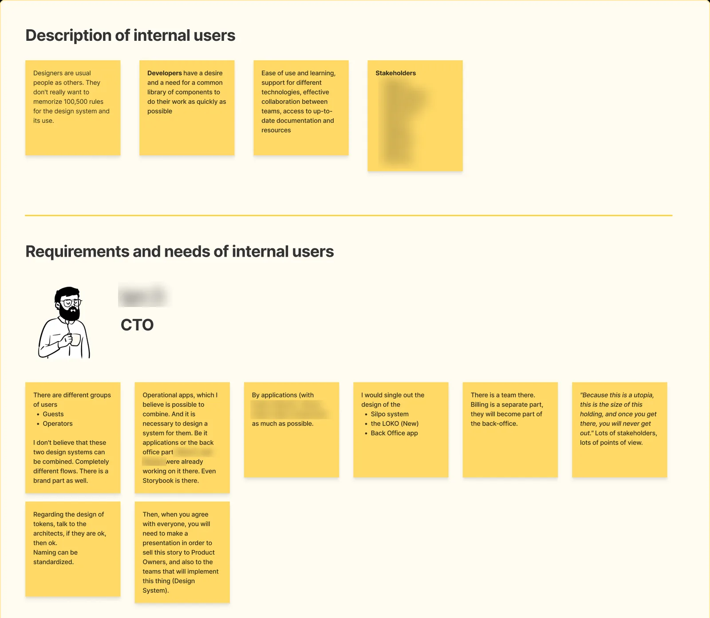
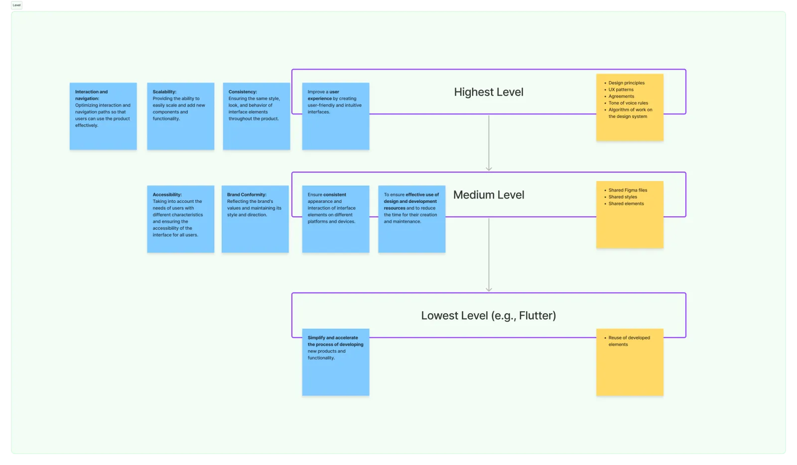
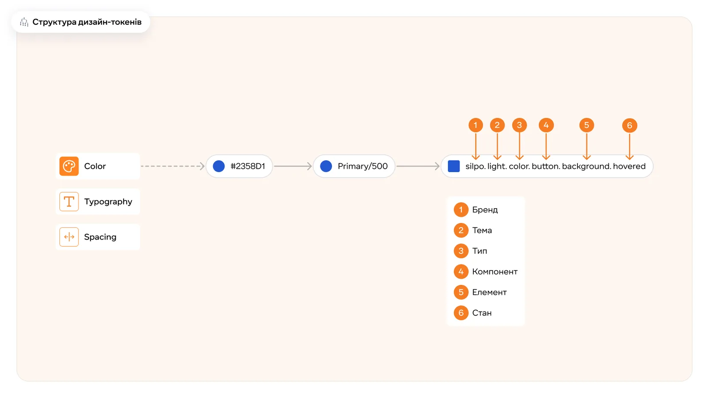
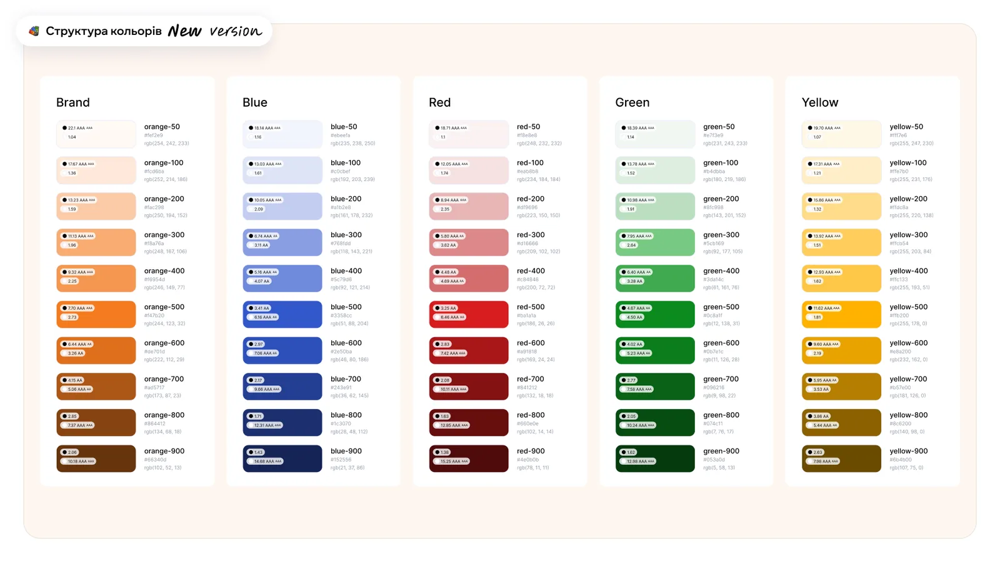

Silpo Design System — started without a mandate, sold as time to market.
A cross-platform design system for Silpo’s customer products: the web shop and a Flutter mobile app. It began as my own initiative, got C-level support through a business case, and set WCAG 2.1 AA as a requirement from day one.

The business problem: the same component, built twice.
Silpo had two customer surfaces that mattered — a web shop and a Flutter app. Every team rebuilt the same components in slightly different ways. Nobody had asked for a design system. There was only visible friction: slow delivery and small inconsistencies that customers could see.
I did not pitch it as a design project. I framed it as a way to shorten time to market for product features, with a side effect the design team cared about: time back for research. That framing got C-level support, and the work started.
How we worked: interviews, priorities, then components.
- Guerrilla interviewsQuick conversations with designers and frontend engineers: what works today and what slows them down.
- Stakeholder interviewsStructured sessions with the CTO, the Solution Architect, the Frontend and Flutter Architects and the Head of Design — to fix requirements and constraints before drawing anything.
- Reference scanMaterial, Cloudscape, Carbon and Polaris — for structure and governance, not for looks.
- RICE prioritisationReach, impact, confidence and effort for every item, so the roadmap could be defended to anyone who asked.
- WCAG 2.1 AA as an entry requirementAccessibility was part of the definition of a component from the first day, not a checklist at the end.

Key decision: three levels of reuse.
Web and Flutter codebases are too different to share everything. Instead of forcing one artefact on every team, the system offers three levels, and each team takes the deepest one its stack allows.
- Patterns onlyShared behaviour and layout rules where codebases diverge too much. The brand stays consistent without component lock-in.
- Components and patternsThe same visual components on web and mobile, implemented per platform.
- Full code reuseOne implementation for products on the same platform, such as all Flutter apps.

Tokens that make accessibility a lookup.
Every token name answers six questions: brand, theme, type, component, element, state. A raw hex becomes a primitive and the primitive becomes a role, so one component can serve two brands and two themes without forking.

The palette was rebuilt as 50–900 scales, with the contrast ratio and its AA or AAA level marked on every step. A designer no longer argues about whether a colour pair is accessible — they read it off the swatch.

Rollout: documentation, training, governance.
- DocumentationZeroheight for foundations and patterns, Storybook for live components, Figma for design work.
- WorkshopsSessions for designers and for engineers, and a shared channel for questions.
- A release pathDesign check, integration in a test environment, then user testing — before a component is called ready.
- GovernanceA monthly changelog, a saved version before every publish, and opt-in patterns instead of mandatory ones.


Outcome — stated honestly.
The outcomes were qualitative: one visual language across web and mobile, and a documented core of 16 components, with the first of them live in Storybook. I have no hard number for time to market and will not invent one. The result I value most is that designers got research time back.
What I took into BitSvit three years later.
- Sell the business case, not the libraryA design system without leadership support is a Figma file that ages quickly.
- Ship a v1A first version that is used beats a third version still in review. Versioning is part of the design.
- Engineers are users tooSo are QA and analysts. A system designed for one group at the expense of another loses adoption.
If you liked this, also see…
Found this through Upwork?
Then you already know where to reach me. Send the brief through your Upwork job post or an invite — I usually reply within a working day.